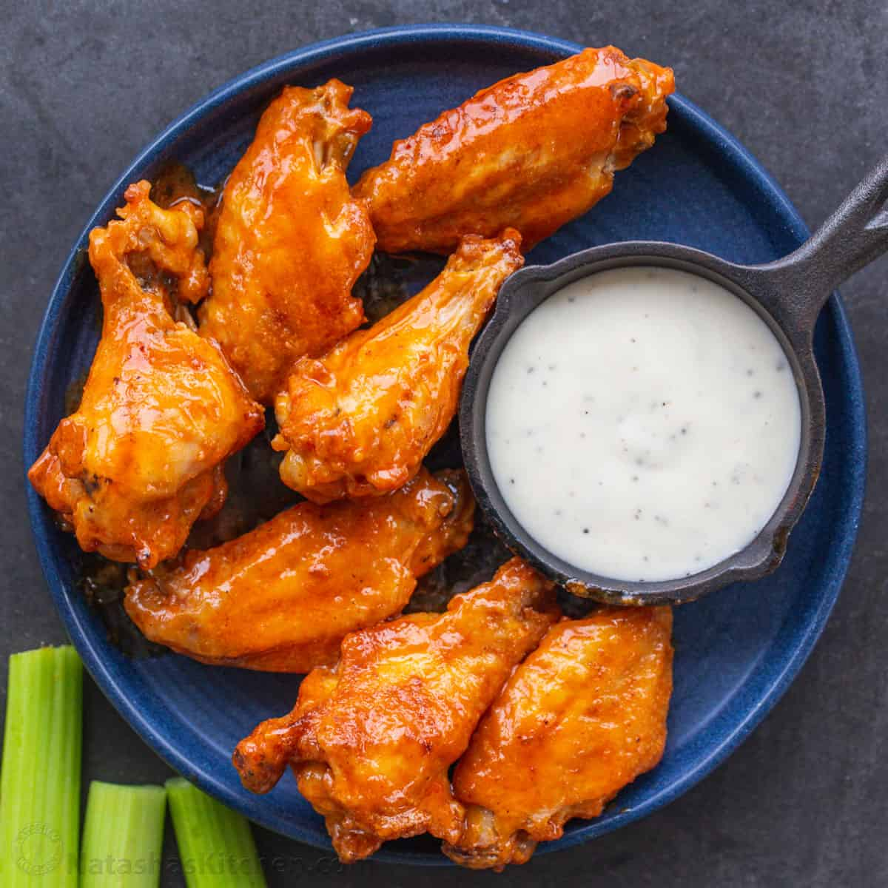

Chicken Wings
Description
Who does not love chicken wings? We all love chicke wings! Here we will have a simple recipe for buffalo chicken wings that you can enjoy at any sporting event,
or even if you just want to eat wings for the sake of it!
Ingredients
Steps
- Add a lot of salt and peper to wings
- Bake and heat the wings
- Glaze the wings in buffalo sauce
- Put in the oven
- Take out, sprinkle with green onions, and let cool for 20 min
- Enjoy!
